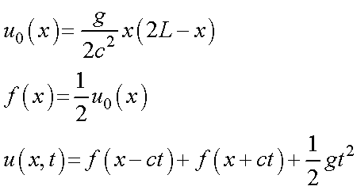
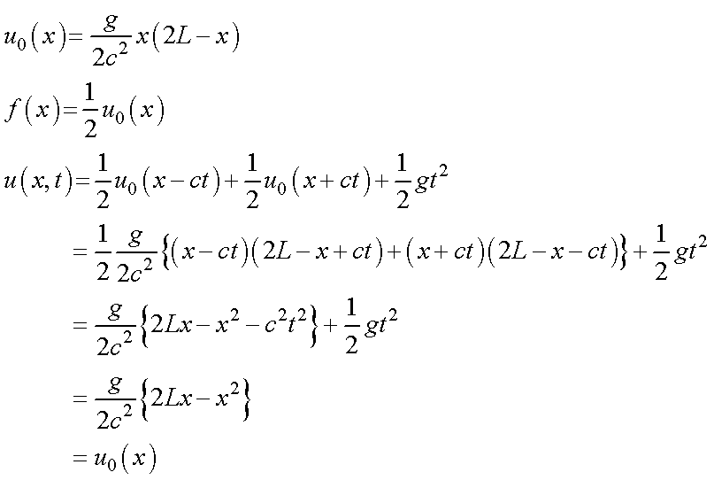

バネの自由落下における最下端の位置変化について，計算-4
・ 静止したバネを自由落下させた場合
バネから手を外した直後にバネの最下端は静止し，いずれ落下していくので，静止しているかどうかの計算はごくごく初期の時間を計算すればいいこととなります．
ct < x < L，の場合，

から，

となって，初期値と同じことがわかります． つまり，位置が変化しない，こととなります（ct=Lまで）．
無事，計算できました！